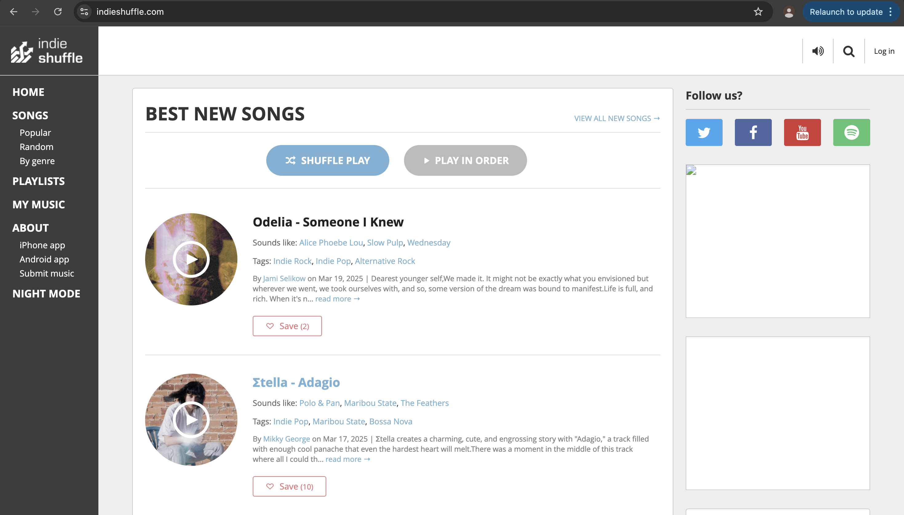
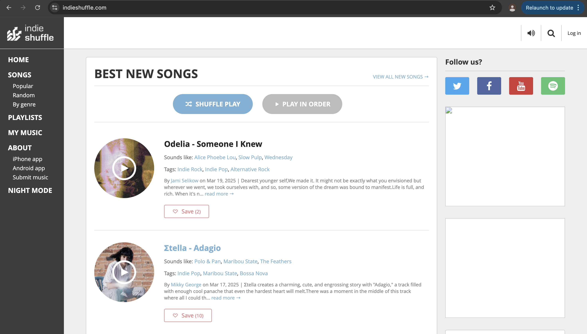
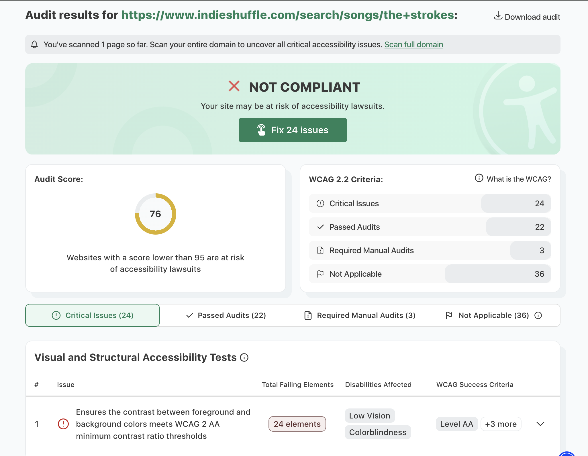

The site we are evaluating
Here is a ScreenShot of the site we will be evaluating:
Here is a ScreenShot of the site we will be evaluating:
The url of the website is https://www.indieshuffle.com/
The name of the website is 'Indie Shuffle'.
The sites target audience is people that want to find new music.
The website has a Hierarchical Organization. It has a clearly defined home page, on the side it has navigation links to major site sections, and you can get to any of the major sections with one click.
The CRAP design principle that the site follows the 'Repitition' design principle. All the major sections have the same colors and follow a similar structure with the sidebar containing links on the left and the middle containing the content.
The audit score based on the accessibility checker is 76.
The site is effective in doing what it was intended for which is to help the user find new music it does this through suggesting music based on what you have previously listend to, suggest random songs and filtering songs based on genre. I belive it support the user in completing actions accurately.
The site if very effcient, there is only a couple of major sections and it is easy to navigate. Users are able to perform tasks quickly because you can navigate most of the major sections with on click.
The engagement is not very good the site has a very bland color scheme and the only images the site contains are the pictures showing the artist picture/logo but I do think that it is appropriate for the topic although a bit lacking.
My recommendation for this website would be to improve the user interface and make it more visually appealing. The color scheme is just grey and white which makes it bland and and boring to look at.